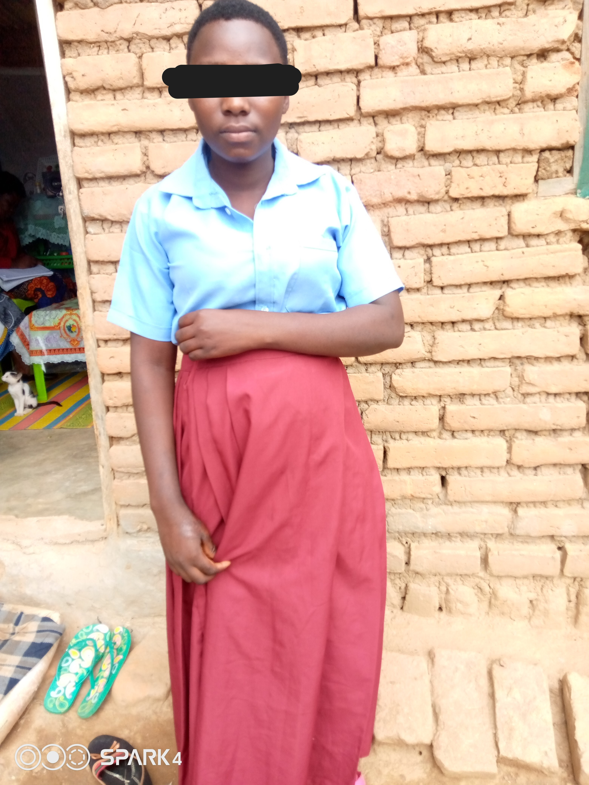

Eliness Mweningubo
Implementing interventions through empowerment model creates long term successes. Through the Promoting Sexual and Reproductive Health and rights for Girls and Young Women project supported by UN Women under Women’s Peace and Humanitarian Fund, KADEC in partnership with community structures have returned back to school Eliness Mweningubo. Eliness Mweningubo comes from the village of Mwakamogho, T/A Mwakaboko. Eliness is one of the victims of harmful cultural practices existing in the community. In her story, Eliness Mweningubo who is attending form 2 at Iponga CDSS shows KUPIMBIRA is the situation she encountered. In October 2020 during late hours, the church organized a choir festival which Elliness attended and that’s where the entire story began. While enjoying the moment she thought of going out to ease herself for a little time outside, she was abducted by 5men which was against her consent and she found herself in a man’s house who claimed that he has married her. While in the locked house where she spent some days and nights, Elliness escaped and went back to her parents. When the news was known to the Mother groups and Youth groups, the team took a step to approach her and encouraged her to go back to school. These are some of the groups that have been strengthened by project and working at community level in promoting sexual reproductive health and rights for girls and young women. Now Elliness is back in school continuing her form two at Iponga CDSS after staying at home for a year.